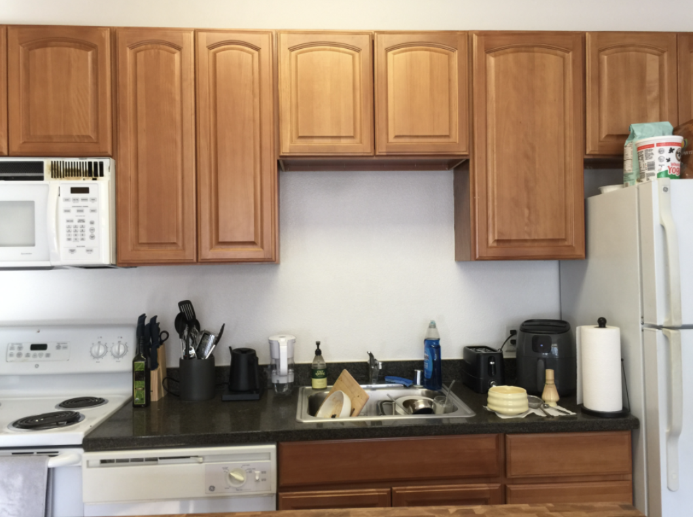
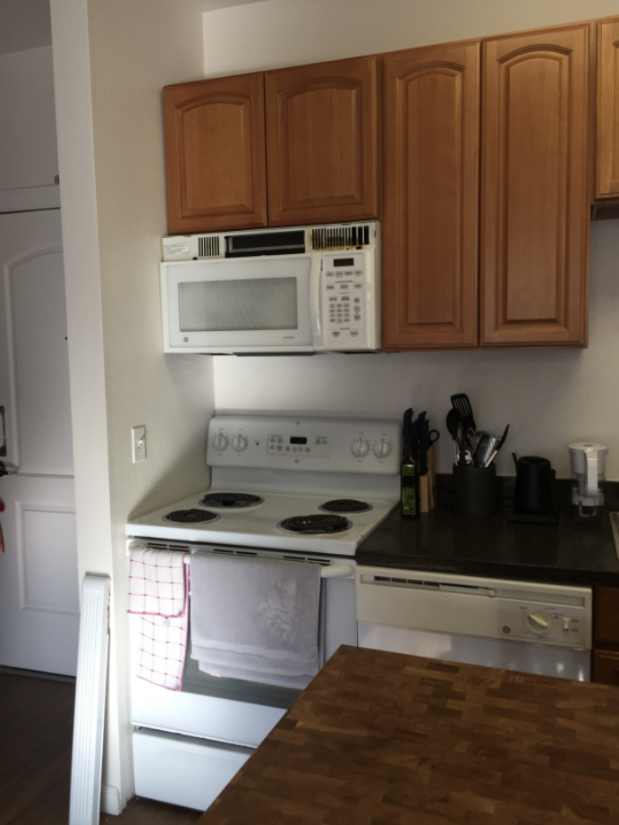
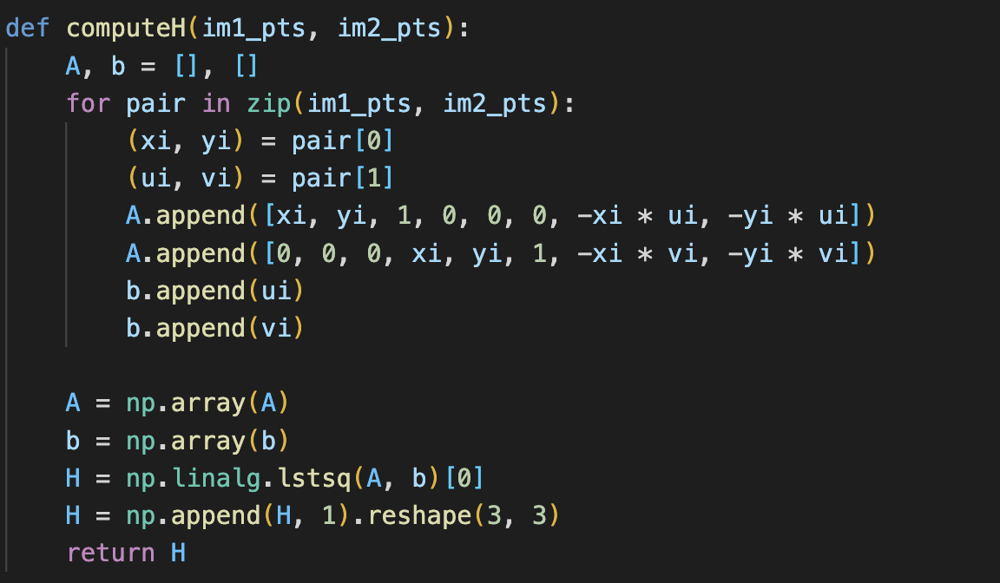
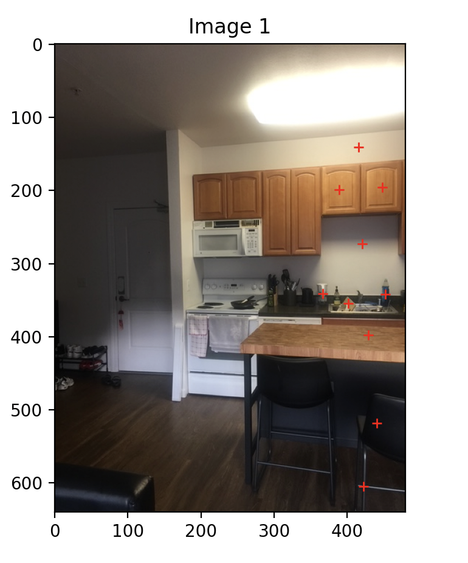

In this project, I explored the use of projective transformations and image warping to create image mosaics. The process involved capturing photographs with projective relationships between them, computing homographies from point correspondences across each pair of images, performing inverse warping using nearest neighbor and bilinear interpolation, and blending the warped images into mosaics.
Below are two sets of images that I captured by rotating the camera around a fixed center of projection.




To align the images, I computed the homography matrix H that maps points from one image to another. Given correspondences p' = Hp, the homography is estimated using least-squares from an overdetermined system of equations Ah = b. Below are visualizations of manually selected correspondences on two sets of images, the constructed systems of equations, and the resulting homography matrices.







I implemented image warping using homographies and explored two interpolation methods: nearest neighbor and bilinear interpolation. Nearest neighbor interpolation rounds mapped coordinates to the nearest pixel value, while bilinear interpolation uses a weighted average of the four neighboring pixels for smoother results. Below are results demonstrating image rectification and a comparison between the two interpolation methods. Nearest neighbor interpolation is faster but produces jagged edges and aliasing, whereas bilinear interpolation is slower but yields smoother, higher-quality warps.


Finally, I created mosaics from the photographs I took using homographies, interpolation, and alpha blending. I used alpha blending to minimize visible seams and “ghosting” artifacts. For each mosaic, one image was chosen as the reference, and the other image was transformed into its coordinate system using warping with bilinear interpolation. To accommodate both images in a single output, I first computed the bounding box of all corner points after transformation to determine the size of the final mosaic canvas. This ensured that both images fit entirely within the canvas. Once both images were placed onto the mosaic canvas, I generated alpha masks for each image using a distance-based approach: the mask was strongest (value 1) near the center of the image and fell off smoothly to 0 at the edges. These alpha masks were then used to perform weighted averaging at each pixel, blending overlapping regions according to their relative alpha values. Pixels near the center of an image contributed more heavily, while edge pixels were faded out to reduce visible seams. This procedure allowed both images to merge naturally on the canvas, producing a single coherent mosaic with smooth transitions and minimal artifacts.


In this section, I implemented the Harris Interest Point Detector to identify keypoints in the image. I also performed Adaptive Non-Maximal Suppression (ANMS) to select spatially well-distributed corners. Below are visualizations showing corners before and after ANMS.


I extracted 8×8 normalized feature descriptors for each interest point by sampling from a larger 40×40 window. Each patch was bias/gain-normalized for illumination invariance. Below are several example patches visualized.

I matched features between image pairs using the ratio test described by Lowe. Matches were accepted if the ratio between the first and second nearest neighbor distances was below a threshold (typically 0.7). Below are visualizations showing matched features with lines drawn between corresponding keypoints.


Using a 4-point RANSAC approach, I estimated robust homographies that reject outlier correspondences. I then generated automatic mosaics using these homographies and compared them with manually aligned results.